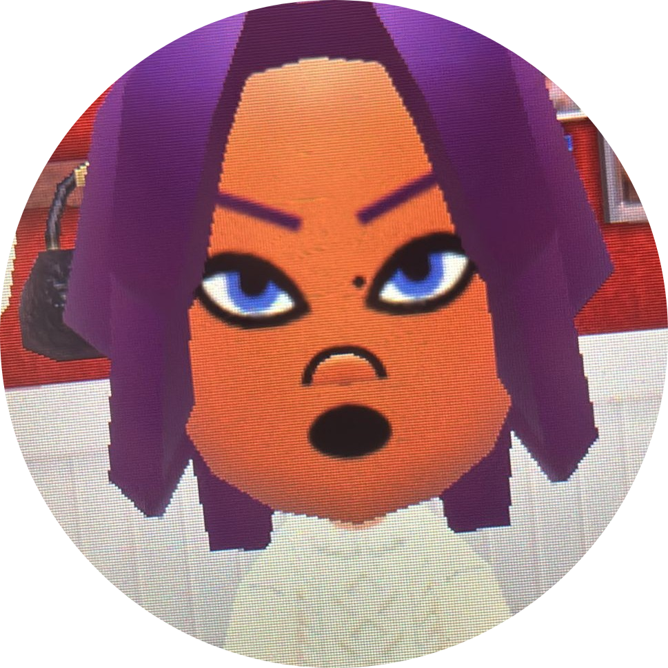

ABOUT ME
Hi, I'm CHOMP!y
⭐️ Self-taught 2D and 3D artist with a deep passion for 2.5D art. I've always been the artist kid at school and intend to keep it that way.
⭐️ Dedicated to mastering coding! I spend countless hours learning both through formal studies and my free time. I started at 10 years old with Unity, and I still miss the days before it had a hub...
⭐️ Actively working on a few personal projects that I hope to share with the world soon. Each project is an opportunity to challenge myself.
